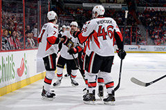
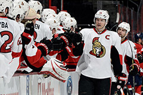
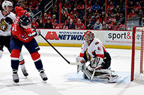
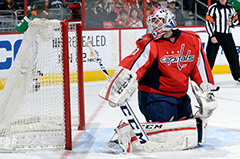

The Lucky 7’s were everywhere Tuesday for the Ottawa Senators, while the Washington Capitals’ long losing slide continued without their Great 8.
The Ottawa Senators took advantage of a Washington Capitals team missing Alex Ovechkin due to a lower-body injury and mired in its longest winless streak of the season. Kyle Turris and Jason Spezza each scored, and Craig Anderson made 34 saves for his third shutout this season and the 25th of his career as the Senators beat the Capitals 2-0 on Tuesday at Verizon Center. The Senators' four-game road trip continues Thursday against the Tampa Bay Lightning. The Capitals will begin a five-game road trip Friday against the Devils at Prudential Center.
12:59 OTT 07 Kyle Turris (15) Snap shot - ASST: Clarke MacArthur (20), Eric Gryba (4)
08:56 OTT PPG - 19 Jason Spezza (13) Snap shot - ASST: Patrick Wiercioch (12), Erik Karlsson (36)
OTTAWA 41 C. Anderson (W) 16-10-6 27 - 27 5 - 5 2 - 2 34 - 34 1.000 0 60:00
WASHINGTON 70 B. Holtby (L) 13-12-2 19 - 20 4 - 5 1 - 1 24 - 26 .923 0 58:43
Scoure: www.nhl.com